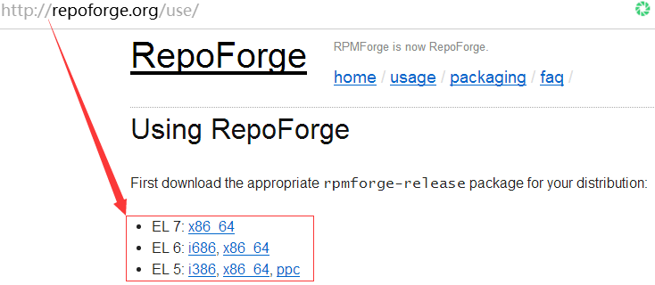

Linux下挂载FAT文件系统
到网址
repoforge.org/use/下载下图文件:
到rpm文件包所在的目录运行
rpm -ivh rpmfilename命令安装相关的库文件使用
yum list | grep ntfs命令查看库中包含的rpm安装包文件使用
yum install fuse-ntfs-3g命令安装相关驱动模块,至此已经可以自动挂载FAT格式磁盘运行
mount命令查看所有已挂载的文件系统可使用
moun.ntfs 挂载点 需挂载磁盘命令挂载FAT文件系统的磁盘